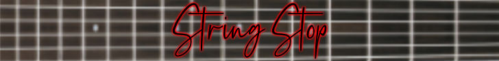
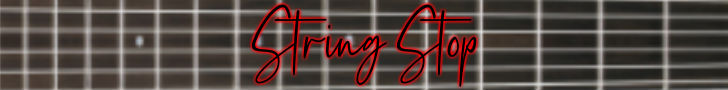
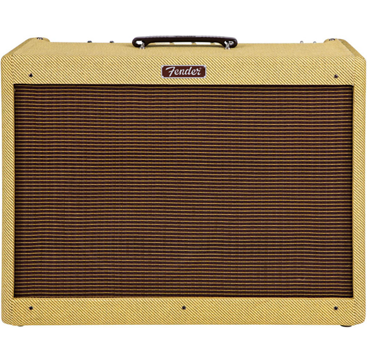

|

|
|
|---|
|  |
Fender Blues Deluxe Reissue 40W 1x12" Combo Amp$899.99The Blues Deluxe Reissue, a re-interpretation of the classic Deluxe amp with a tube complement of 3 - 12AX7s and 2 - 6L6s produces 40W into a 12" Eminence special-design speaker with an all-tube preamp and power amp. It has Normal and Drive channels with independent Gain and Master for the Drive channel and a Bright switch for Normal channel. It also has an effects loop, reverb, presence, master volume, 3-band EQ, and Standby switch. Original Blues series styling includes a chrome control panel, vintage chicken-head knobs, and, of course, genuine tweed covering. |
|---|
-All-tube preamp and power amp
-Power: 40W
-12" special-design Eminence speaker
-Dual selectable channels (Normal and Drive)
-Independent Gain and Master controls in the Drive channel
-Bright switch for Normal channel
-Effects loop
-Reverb
-Chrome panel
-Vintage chicken-head knobs
-Controls: Presence, Reverb, Master, Middle, Bass, Treble, Drive select switch, Drive, Volume, Bright, Standby
-Genuine tweed covering
-Tube complement: three 12AX7, two 6L6, SS rectifier
-Includes footswitch